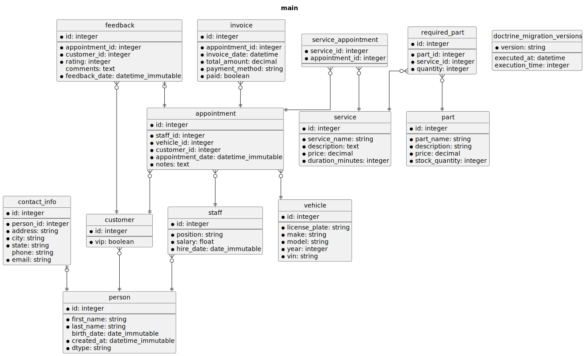
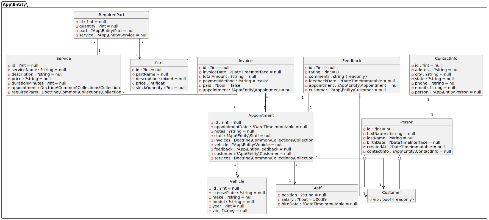

Usage
DoctrineDiagramBundle provides two Symfony commands to generate diagrams from your database:
doctrine:diagram:er- To generate Entity-Relationship diagrams.doctrine:diagram:class- To generate Class diagrams.
Generating Entity-Relationship diagrams
An Entity-Relationship (ER) diagram visually represents the entities (such as tables) in a database, their attributes (such as columns), and the relationships between them.
Use the following command to generate Entity-Relationship diagrams:
You can also use the following shortcut:
If you are using the default configuration, a file named er.svg will be
created at the root of your project.

If your application uses multiple databases, you can specify which DBAL
connection to use using the --connection option:
You can also set the DBAL connection in doctrine_diagram.yaml.
Set the connection to null, and the default connection will be used.
Generating Class diagrams
A UML Class diagram visually represents the classes in your project, including their properties (attributes), methods (operations), and the relationships between them.
Use the following command to generate Class diagrams:
You can also use the following shortcut:
Info
DoctrineDiagramBundle will only use Doctrine entities to generate the
diagram. Additionally, only properties with the ORM\Column attribute are
displayed, other class properties are ignored.
If you are using the default configuration, a file named class.svg will be
created at the root of your project.

If your application uses multiple databases, you can specify which Entity
Manager to use using the --em option:
In doctrine_diagram.yaml:
Set em to null, and the default Entity Manager will be used.
How to pipe output
Use php://stdout as the destination file to redirect image to standard output.
For example:
Known Issues
Error: "Failed to open stream: HTTP request failed!"
This error occurs when you are trying to generate a diagram in SVG or PNG formats, and you are using the public PlantUML server.
The problem is that the diagram you are trying to create is too large, and the PlantUML server has limited diagram sizes to avoid abuse.
Solution 1
Use PlantUML locally instead of a web server. This is explained in Configuration page.
Solution 2
Generate a diagram in PUML format. This diagram is generated locally and doesn't
require the PlantUML server. Then, use the plantuml executable locally to
convert the PUML diagram to the desired format.
Solution 3
Do not use the public PlantUML server; use your own PlantUML server instead.
Then, access your server using the command option --server, or in the
doctrine_diagram.yaml file.
Error 'Unknown column type "uuid" requested'
You encounter the following error when trying to generate a diagram:
CRITICAL [console] Error thrown while running command "doctrine:diagram". Message: "Unknown column type "uuid" requested. Any Doctrine type that you use has to be registered with \Doctrine\DBAL\Types\Type::addType().
To fix this error, add a custom type in the doctrine.yaml config file. For example:
Source: Registering custom Mapping Types.
Error "Syntax Error"
When trying to generate a Diagram, you get the following error in the terminal:
Solution
Use a newer version of PlantUML, older versions of PlantUML do not support features like themes and custom namespace separators.